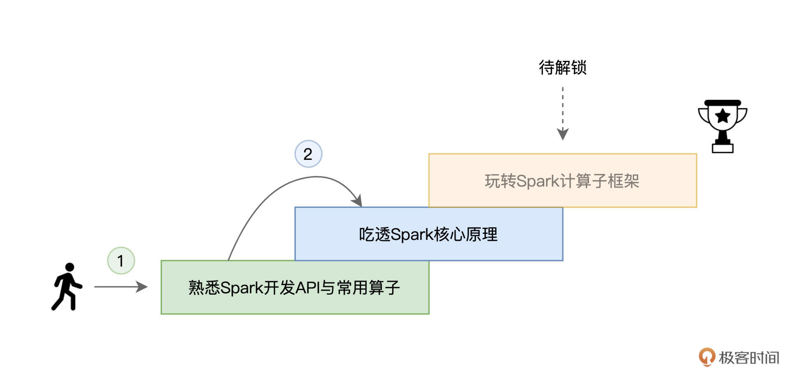
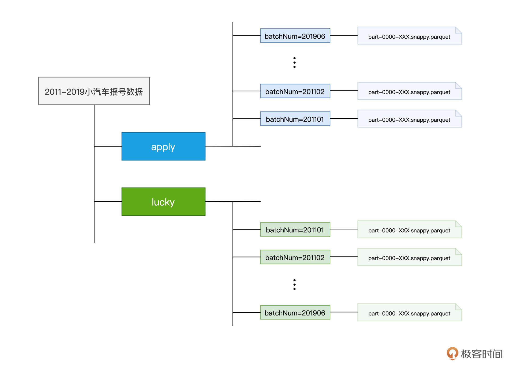
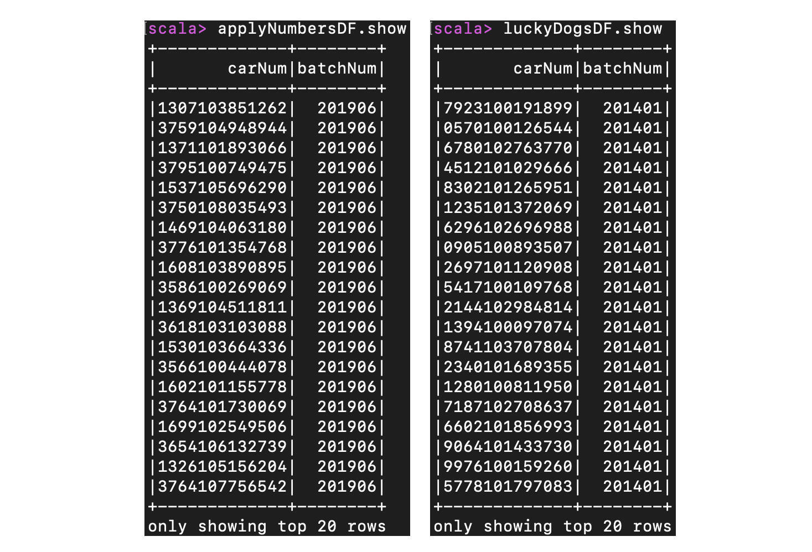
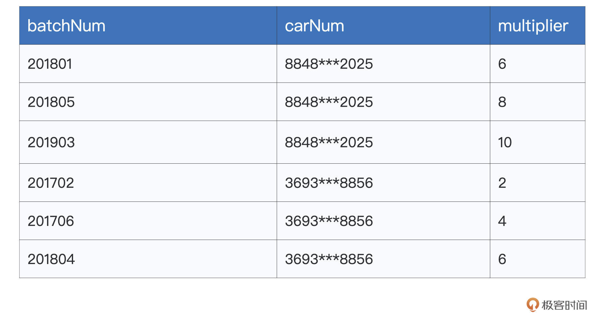
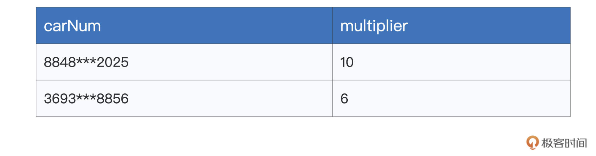
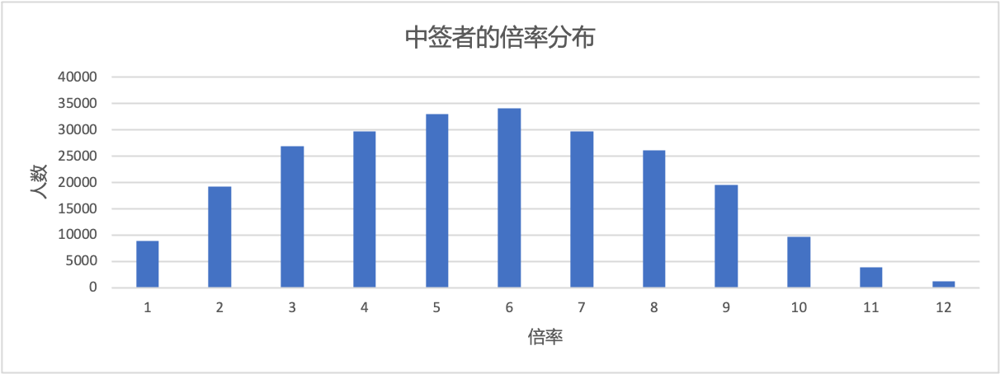

- 00 开篇词 入门Spark，你需要学会“三步走”.md
- 01 Spark：从“大数据的Hello World”开始.md
- 02 RDD与编程模型：延迟计算是怎么回事？.md
- 03 RDD常用算子（一）：RDD内部的数据转换.md
- 04 进程模型与分布式部署：分布式计算是怎么回事？.md
- 05 调度系统：如何把握分布式计算的精髓？.md
- 06 Shuffle管理：为什么Shuffle是性能瓶颈？.md
- 07 RDD常用算子（二）：Spark如何实现数据聚合？.md
- 08 内存管理：Spark如何使用内存？.md
- 09 RDD常用算子（三）：数据的准备、重分布与持久化.md
- 10 广播变量 & 累加器：共享变量是用来做什么的？.md
- 11 存储系统：数据到底都存哪儿了？.md
- 12 基础配置详解：哪些参数会影响应用程序稳定性？.md
- 13 Spark SQL：让我们从“小汽车摇号分析”开始.md
- 14 台前幕后：DataFrame与Spark SQL的由来.md
- 15 数据源与数据格式：DataFrame从何而来？.md
- 16 数据转换：如何在DataFrame之上做数据处理？.md
- 17 数据关联：不同的关联形式与实现机制该怎么选？.md
- 18 数据关联优化：都有哪些Join策略，开发者该如何取舍？.md
- 19 配置项详解：哪些参数会影响应用程序执行性能？.md
- 20 Hive + Spark强强联合：分布式数仓的不二之选.md
- 21 Spark UI（上）：如何高效地定位性能问题？.md
- 22 Spark UI（下）：如何高效地定位性能问题？.md
- 23 Spark MLlib：从“房价预测”开始.md
- 24 特征工程（上）：有哪些常用的特征处理函数？.md
- 25 特征工程（下）：有哪些常用的特征处理函数？.md
- 26 模型训练（上）：决策树系列算法详解.md
- 27 模型训练（中）：回归、分类和聚类算法详解.md
- 28 模型训练（下）：协同过滤与频繁项集算法详解.md
- 29 Spark MLlib Pipeline：高效开发机器学习应用.md
- 30 Structured Streaming：从“流动的Word Count”开始.md
- 31 新一代流处理框架：Batch mode和Continuous mode哪家强？.md
- 32 Window操作&Watermark：流处理引擎提供了哪些优秀机制？.md
- 33 流计算中的数据关联：流与流、流与批.md
- 34 Spark + Kafka：流计算中的“万金油”.md
- 用户故事 小王：保持空杯心态，不做井底之蛙.md
- 结束语 进入时间裂缝，持续学习.md
13 Spark SQL：让我们从“小汽车摇号分析”开始
你好，我是吴磊。
在开篇词我们提出“入门Spark需要三步走”，到目前为止，我们携手并肩跨越了前面两步，首先恭喜你学到这里！熟练掌握了Spark常用算子与核心原理以后，你已经可以轻松应对大部分数据处理需求了。
不过，数据处理毕竟是比较基础的数据应用场景，就像赛车有着不同的驾驶场景，想成为Spark的资深赛车手，我们还要走出第三步——学习Spark计算子框架。只有完成这一步，我们才能掌握Spark SQL，Structured Streaming和Spark MLlib的常规开发方法，游刃有余地应对不同的数据应用场景，如数据分析、流计算和机器学习，等等。

那这么多子框架，从哪里入手比较好呢？在所有的子框架中，Spark SQL是代码量最多、Spark社区投入最大、应用范围最广、影响力最深远的那个。就子框架的学习来说，我们自然要从Spark SQL开始。
今天我们从一个例子入手，在实战中带你熟悉数据分析开发的思路和实现步骤。有了对Spark SQL的直观体验，我们后面几讲还会深入探讨Spark SQL的用法、特性与优势，让你逐步掌握Spark SQL的全貌。
业务需求
今天我们要讲的小例子，来自于北京市小汽车摇号。我们知道，为了限制机动车保有量，从2011年开始，北京市政府推出了小汽车摇号政策。随着摇号进程的推进，在2016年，为了照顾那些长时间没有摇中号码牌的“准司机”，摇号政策又推出了“倍率”制度。
所谓倍率制度，它指的是，结合参与摇号次数，为每个人赋予不同的倍率系数。有了倍率加持，大家的中签率就由原来整齐划一的基础概率，变为“基础概率 * 倍率系数”。参与摇号的次数越多，倍率系数越大，中签率也会相应得到提高。
不过，身边无数的“准司机”总是跟我说，其实倍率这玩意没什么用，背了8倍、10倍的倍率，照样摇不上！那么今天这一讲，咱们就来借着学习Spark SQL的机会，用数据来为这些还没摸过车的“老司机”答疑解惑，帮他们定量地分析一下，倍率与中签率之间，到底有没有关系？
准备工作
巧妇难为无米之炊，既然是做数据分析，那咱们得先有数据才行。我这边为你准备了2011年到2019年北京市小汽车的摇号数据，你可以通过这个地址，从网盘进行下载，提取码为ajs6。
这份数据的文件名是“2011-2019 小汽车摇号数据.tar.gz”，解压之后的目录结构如下图所示。
可以看到，根目录下有apply和lucky两个子目录，apply目录的内容是 2011-2019 年各个批次参与摇号的申请号码，而lucky目录包含的是各个批次中签的申请号码。为了叙述方便，我们把参与过摇号的人叫“申请者”，把中签的人叫“中签者”。apply和lucky的下一级子目录是各个摇号批次，而摇号批次目录下包含的是Parquet格式的数据文件。

数据下载、解压完成之后，接下来，我们再来准备运行环境。
咱们的小例子比较轻量，Scala版本的代码实现不会超过20行，再者摇号数据体量很小，解压之后的Parquet文件总大小也不超过4G。
选择这样的例子也是为了轻装上阵，避免你因为硬件限制而难以实验。想要把用于分析倍率的应用跑起来，你在笔记本或是PC上，通过启动本地spark-shell环境就可以。不过，如果条件允许的话，我还是鼓励你搭建分布式的物理集群。关于分布式集群的搭建细节，你可以参考[第4讲]。
好啦，准备好数据与运行环境之后，接下来，我们就可以步入正题，去开发探索倍率与中签率关系的数据分析应用啦。
数据探索
不过，先别忙着直接上手数据分析。在此之前，我们先要对数据模式（Data Schema）有最基本的认知，也就是源数据都有哪些字段，这些字段的类型和含义分别是什么，这一步就是我们常说的数据探索。
数据探索的思路是这样的：首先，我们使用SparkSession的read API读取源数据、创建DataFrame。然后，通过调用DataFrame的show方法，我们就可以轻松获取源数据的样本数据，从而完成数据的初步探索，代码如下所示。
import org.apache.spark.sql.DataFrame
val rootPath: String = _
// 申请者数据
val hdfs_path_apply: String = s"${rootPath}/apply"
// spark是spark-shell中默认的SparkSession实例
// 通过read API读取源文件
val applyNumbersDF: DataFrame = spark.read.parquet(hdfs_path_apply)
// 数据打印
applyNumbersDF.show
// 中签者数据
val hdfs_path_lucky: String = s"${rootPath}/lucky"
// 通过read API读取源文件
val luckyDogsDF: DataFrame = spark.read.parquet(hdfs_path_lucky)
// 数据打印
luckyDogsDF.show
看到这里，想必你已经眉头紧锁：“SparkSession？DataFrame？这些都是什么鬼？你好像压根儿也没有提到过这些概念呀！”别着急，对于这些关键概念，我们在后续的课程中都会陆续展开，今天这一讲，咱们先来“知其然”，“知其所以然”的部分咱们放到后面去讲。
对于SparkSession，你可以把它理解为是SparkContext的进阶版，是Spark（2.0版本以后）新一代的开发入口。SparkContext通过textFile API把源数据转换为RDD，而SparkSession通过read API把源数据转换为DataFrame。
而DataFrame，你可以把它看作是一种特殊的RDD。RDD我们已经很熟悉了，现在就把DataFrame跟RDD做个对比，让你先对DataFrame有个感性认识。
先从功能分析，与RDD一样，DataFrame也用来封装分布式数据集，它也有数据分区的概念，也是通过算子来实现不同DataFrame之间的转换，只不过DataFrame采用了一套与RDD算子不同的独立算子集。
再者，在数据内容方面，与RDD不同，DataFrame是一种带Schema的分布式数据集，因此，你可以简单地把DataFrame看作是数据库中的一张二维表。
最后，DataFrame背后的计算引擎是Spark SQL，而RDD的计算引擎是Spark Core，这一点至关重要。不过，关于计算引擎之间的差异，我们留到[下一讲]再去展开。
好啦，言归正传。简单了解了SparkSession与DataFrame的概念之后，我们继续来看数据探索。
把上述代码丢进spark-shell之后，分别在applyNumbersDF和luckyDogsDF这两个DataFrame之上调用show函数，我们就可以得到样本数据。可以看到，“这两张表”的Schema是一样的，它们都包含两个字段，一个是String类型的carNum，另一个是类型为Int的batchNum。

其中，carNum的含义是申请号码、或是中签号码，而batchNum则代表摇号批次，比如201906表示2019年的最后一批摇号，201401表示2014年的第一次摇号。
好啦，进行到这里，初步的数据探索工作就告一段落了。
业务需求实现
完成初步的数据探索之后，我们就可以结合数据特点（比如两张表的Schema完全一致，但数据内容的范畴不同），来实现最开始的业务需求：计算中签率与倍率之间的量化关系。
首先，既然是要量化中签率与倍率之间的关系，我们只需要关注那些中签者（lucky目录下的数据）的倍率变化就好了。而倍率的计算，要依赖apply目录下的摇号数据。因此，要做到仅关注中签者的倍率，我们就必须要使用数据关联这个在数据分析领域中最常见的操作。此外，由于倍率制度自2016年才开始推出，所以我们只需要访问2016年以后的数据即可。
基于以上这些分析，我们先把数据过滤与数据关联的代码写出来，如下所示。
// 过滤2016年以后的中签数据，且仅抽取中签号码carNum字段
val filteredLuckyDogs: DataFrame = luckyDogsDF.filter(col("batchNum") >= "201601").select("carNum")
// 摇号数据与中签数据做内关联，Join Key为中签号码carNum
val jointDF: DataFrame = applyNumbersDF.join(filteredLuckyDogs, Seq("carNum"), "inner")
在上面的代码中，我们使用filter算子对luckyDogsDF做过滤，然后使用select算子提取carNum字段。
紧接着，我们在applyNumbersDF之上调用join算子，从而完成两个DataFrame的数据关联。join算子有3个参数，你可以对照前面代码的第5行来理解，这里第一个参数用于指定需要关联的DataFrame，第二个参数代表Join Key，也就是依据哪些字段做关联，而第三个参数指定的是关联形式，比如inner表示内关联，left表示左关联，等等。
做完数据关联之后，接下来，我们再来说一说，倍率应该怎么统计。对于倍率这个数值，官方的实现略显粗暴，如果去观察 apply 目录下 2016 年以后各个批次的文件，你就会发现，所谓的倍率，实际上就是申请号码的副本数量。
比如说，我的倍率是8，那么在各个批次的摇号文件中，我的申请号码就会出现8次。是不是很粗暴？因此，要统计某个申请号码的倍率，我们只需要统计它在批次文件中出现的次数就可以达到目的。
按照批次、申请号码做统计计数，是不是有种熟悉的感觉？没错，这不就是我们之前学过的Word Count吗？它本质上其实就是一个分组计数的过程。不过，这一次，咱们不再使用reduceByKey这个RDD算子了，而是使用DataFrame的那套算子来实现，我们先来看代码。
val multipliers: DataFrame = jointDF.groupBy(col("batchNum"),col("carNum"))
.agg(count(lit(1)).alias("multiplier"))
分组计数
对照代码我给你分析下思路，我们先是用groupBy算子来按照摇号批次和申请号码做分组，然后通过agg和count算子把（batchNum，carNum）出现的次数，作为carNum在摇号批次batchNum中的倍率，并使用alias算子把倍率重命名为“multiplier”。
这么说可能有点绕，我们可以通过在multipliers之上调用show函数，来直观地观察这一步的计算结果。为了方便说明，我用表格的形式来进行示意。

可以看到，同一个申请号码，在不同批次中的倍率是不一样的。就像我们之前说的，随着摇号的次数增加，倍率也会跟着提升。不过，这里咱们要研究的是倍率与中签率的关系，所以只需要关心中签者是在多大的倍率下中签的就行。因此，对于同一个申请号码，我们只需要保留其中最大的倍率就可以了。
需要说明的是，取最大倍率的做法，会把倍率的统计基数变小，从而引入幸存者偏差。更严谨的做法，应该把中签者过往的倍率也都统计在内，这样倍率的基数才是准确的。不过呢，结合实验，幸存者偏差并不影响“倍率与中签率是否有直接关系”这一结论。因此，咱们不妨采用取最大倍率这种更加简便的做法。毕竟，学习Spark SQL，才是咱们的首要目标。
为此，我们需要“抹去”batchNum这个维度，按照carNum对multipliers做分组，并提取倍率的最大值，代码如下所示。
val uniqueMultipliers: DataFrame = multipliers.groupBy("carNum")
.agg(max("multiplier").alias("multiplier"))
分组聚合的方法跟前面差不多，我们还是先用groupBy做分组，不过这次仅用carNum一个字段做分组，然后使用agg和max算子来保留倍率最大值。经过这一步的计算之后，我们就得到了每个申请号码在中签之前的倍率系数：

可以看到，uniqueMultipliers这个DataFrame仅包含申请号码carNum和倍率multiplier这两个字段，且carNum字段不存在重复值，也就是说，在这份数据集中，一个申请号码，只有一个最大倍率与之对应。
好啦，到此为止，我们拿到了每一个中签者，在中签之前的倍率系数。接下来，结合这份数据，我们就可以统计倍率本身的分布情况。
具体来说，我们想知道的是，不同倍率之下的人数分布是什么样子的。换句话说，这一次，我们要按照倍率来对数据做分组，然后计算不同倍率下的统计计数。不用说，这次咱们还是得仰仗groupBy和agg这两个算子，代码如下所示。
val result: DataFrame = uniqueMultipliers.groupBy("multiplier")
.agg(count(lit(1)).alias("cnt"))
.orderBy("multiplier")
result.collect
在最后一步，我们依然使用groupBy和agg算子如法炮制，得到按照倍率统计的人数分布之后，我们通过collect算子来收集计算结果，并同时触发上述的所有代码从头至尾交付执行。
计算结果result包含两个字段，一个是倍率，一个是持有该倍率的统计人数。如果把result结果数据做成柱状图的话，我们可以更加直观地观察到中签率与倍率之间的关系，如下图所示。

不难发现，不同倍率下的中签者人数，呈现出正态分布。也即是说，对于一个申请者来说，他/她有幸摇中的概率，并不会随着倍率的增加而线性增长。用身边那些“老司机”的话说，中签这件事，确实跟倍率的关系不大。
重点回顾
今天这一讲，我们一起动手，开发了“倍率的统计分布”这个数据分析应用，并解答了中签率与倍率之间是否存在关联关系这一难题。
尽管在实现的过程中，我们遇到了一些新概念和新的算子，但你不必担心，更不必着急。今天这节课，你只需要对Spark SQL框架下的应用开发有一个感性的认识就可以了。
在Spark SQL的开发框架下，我们通常是通过SparkSession的read API从源数据创建DataFrame。然后，以DataFrame为入口，在DataFrame之上调用各式各样的转换算子，如agg、groupBy、select、filter等等，对DataFrame进行转换，进而完成相应的数据分析。
为了后续试验方便，我把今天涉及的代码片段整理到了一起，你可以把它们丢进spark-shell去运行，观察每个环节的计算结果，体会不同算子的计算逻辑与执行结果之间的关系。加油，祝你好运！
import org.apache.spark.sql.DataFrame
val rootPath: String = _
// 申请者数据
val hdfs_path_apply: String = s"${rootPath}/apply"
// spark是spark-shell中默认的SparkSession实例
// 通过read API读取源文件
val applyNumbersDF: DataFrame = spark.read.parquet(hdfs_path_apply)
// 中签者数据
val hdfs_path_lucky: String = s"${rootPath}/lucky"
// 通过read API读取源文件
val luckyDogsDF: DataFrame = spark.read.parquet(hdfs_path_lucky)
// 过滤2016年以后的中签数据，且仅抽取中签号码carNum字段
val filteredLuckyDogs: DataFrame = luckyDogsDF.filter(col("batchNum") >= "201601").select("carNum")
// 摇号数据与中签数据做内关联，Join Key为中签号码carNum
val jointDF: DataFrame = applyNumbersDF.join(filteredLuckyDogs, Seq("carNum"), "inner")
// 以batchNum、carNum做分组，统计倍率系数
val multipliers: DataFrame = jointDF.groupBy(col("batchNum"),col("carNum"))
.agg(count(lit(1)).alias("multiplier"))
// 以carNum做分组，保留最大的倍率系数
val uniqueMultipliers: DataFrame = multipliers.groupBy("carNum")
.agg(max("multiplier").alias("multiplier"))
// 以multiplier倍率做分组，统计人数
val result: DataFrame = uniqueMultipliers.groupBy("multiplier")
.agg(count(lit(1)).alias("cnt"))
.orderBy("multiplier")
result.collect
每课一练
-
脑洞时间：你觉得汽车摇号的倍率制度应该怎样设计，才是最合理的？
-
请在你的Spark环境中把代码运行起来，并确认执行结果是否与result一致。
欢迎你在留言区跟我交流互动，也推荐你把这一讲的内容分享给更多的朋友、同事。我们下一讲见！
© 2019 - 2023 Liangliang Lee. Powered by Vert.x and hexo-theme-book.